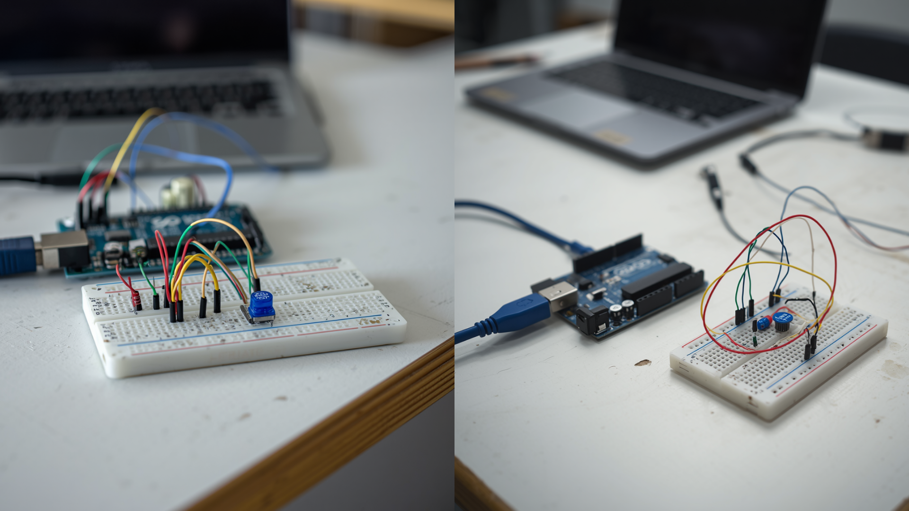

Bem-vindos ao nosso site de registros!
Criamos esta página durante as aulas de Programação para documentar a evolução dos nossos projetos e protótipos de robótica. Aqui você vai encontrar nossas anotações de testes, registros em fotos e vídeos, além dos códigos que desenvolvemos para fazer as ideias funcionarem na prática.
🚀 Registro dos Protótipos
Protótipo 1: Lixeira Automatizada com Sensor
Anotações do Grupo: No dia 14/05, montamos a primeira versão do nosso protótipo utilizando uma lixeira de plástico pequena, um servo motor e um sensor ultrassônico. O objetivo do projeto é fazer com que a tampa abra sozinha quando alguém aproximar a mão a menos de 15 centímetros, evitando o contato direto e melhorando a higiene na escola.
Resultado dos Testes: Nos primeiros testes, a tampa abria muito rápido e batia com força. Ajustamos o ângulo do servo motor no código de 180 para 90 graus e resolveu o problema. O sensor funcionou perfeitamente detectando a aproximação.
📸 Evidências do Projeto

Circuito montado na placa de ensaio (Protoboard)
Vídeo demonstrativo do teste de abertura da tampa
💻 Código Fonte (Arduino C++)
Este foi o código que escrevemos e testamos no Arduino Uno para controlar o sensor e o motor:
#include <Servo.h>
Servo meuServo;
const int trigPin = 9;
const int echoPin = 10;
long duracao;
int distancia;
void setup() {
meuServo.attach(11);
pinMode(trigPin, OUTPUT);
pinMode(echoPin, INPUT);
meuServo.write(0); // Garante que a lixeira começa fechada
}
void loop() {
// Limpa o trigPin
digitalWrite(trigPin, LOW);
delayMicroseconds(2);
// Ativa o sensor por 10 microssegundos
digitalWrite(trigPin, HIGH);
delayMicroseconds(10);
digitalWrite(trigPin, LOW);
// Calcula a distância
duracao = pulseIn(echoPin, HIGH);
distancia = duracao * 0.034 / 2;
// Se a mão estiver a menos de 15cm, abre a lixeira
if (distancia < 15) {
meuServo.write(90); // Abre a tampa
delay(4000); // Mantém aberta por 4 segundos
} else {
meuServo.write(0); // Fecha a tampa
}
delay(100);
}
👥 Sobre o Grupo
Somos o Grupo 3, estudantes da turma do 2º Ano B do Ensino Médio do Colégio Estadual Natália Reginato. Este espaço foi construído nas aulas do Itinerário Formativo de Física, Robótica e Programação (IFA Exatas), onde aprendemos a integrar lógica de programação e circuitos eletrônicos na construção de projetos funcionais.
Integrantes e Funções:
- Arthur Silva Mendonça — Montagem de Circuitos e Hardware
- Beatriz Oliveira Rocha — Desenvolvimento e Programação C++
- Carlos Eduardo Santos — Documentação Técnica e Código Web
- Gabriel Henrique Lima — Testes de Sensores e Calibragem
- Julia Costa Alencar — Engenharia de Requisitos e Pesquisa
- Mariana Souza Vieira — Gestão do Projeto e Design do Protótipo
📍 Nossa Localização
Desenvolvemos nossas atividades práticas nos laboratórios e salas de aula da nossa escola: